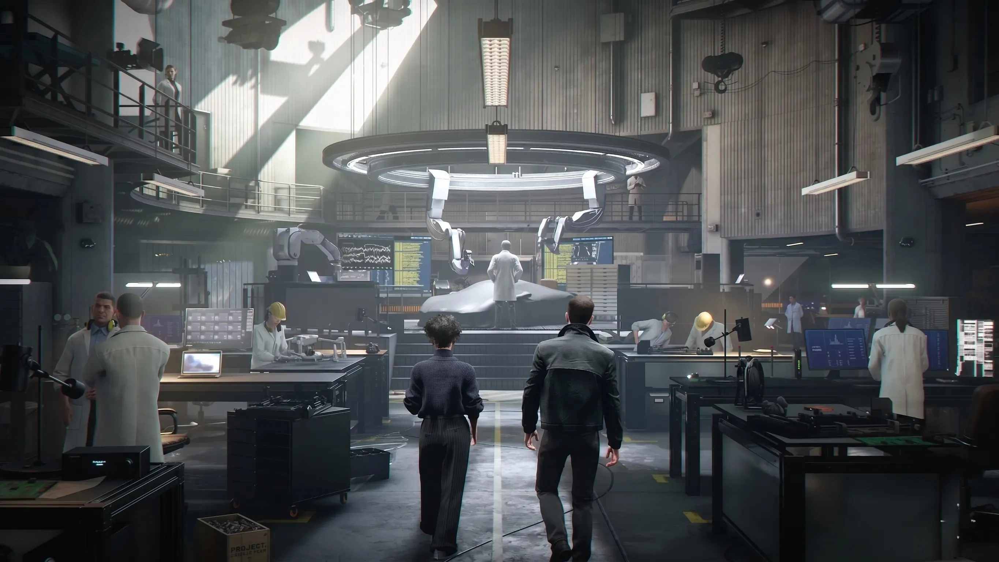

007 First Light No Pre-Load Controversy: Why Steam & Xbox Players Are Being Left Behind

Table of Contents
- 007 First Light Release Date and Early Access Times — All Regions
- No Pre-Load on Steam or Xbox — Why It's a Problem
- The Early Access That Isn't: Pre-Order Bonus Broken Without Pre-Load
- Is 007 First Light on Xbox Game Pass?
- 007 First Light Switch 2 Delay Explained
- The Review Embargo Controversy — Codes Sent May 22
- Collector's Edition / Legacy Edition: $299.99 — What's Included
- All Editions Compared: Standard, Deluxe, Legacy
- 007 First Light at State of Play — The 30-Minute Reveal
- What Is 007 First Light? The Game Itself Explained
- Platform Comparison: PS5 vs Xbox vs PC vs Switch 2
- Frequently Asked Questions
- Conclusion
IO Interactive's 007 First Light — the most anticipated James Bond video game in years — launches tomorrow, May 27, 2026. If you pre-ordered, you are already in early access today. But for Steam and Xbox players without a pre-order, this launch is arriving with a pile of avoidable frustrations: no pre-load, no Game Pass, a late review embargo, and a Switch 2 version that won't arrive until summer. Here is everything you need to know before launch.
Quick Summary — 007 First Light Launch
Early Access (pre-orders): May 26, 2026 at 7am PT / 3pm BST
Standard Release: May 27, 2026 at 7am PT / 3pm BST
Pre-load (Steam/Xbox): ❌ Not available
Pre-load (PS5): ✅ Available (mandatory on PS5)
Xbox Game Pass: ❌ Not at launch
Switch 2: ⏳ Delayed to "later this summer"
Price: $69.99 (Standard/Deluxe with pre-order) / $299.99 (Legacy Edition)
Download size: ~80GB
007 First Light Release Date and Early Access Times — All Regions
The game technically has two launch dates due to its pre-order early access system. Pre-orders get 24-hour early access for free — you do not need to buy a Deluxe Edition. Any pre-order of the standard $69.99 game automatically upgrades you to the Deluxe Edition and unlocks early access.
| Region | Early Access (Pre-orders) — May 26 | Standard Launch — May 27 |
|---|---|---|
| US Pacific (PT) | 7:00 AM | 7:00 AM |
| US Eastern (ET) | 10:00 AM | 10:00 AM |
| UK / BST | 3:00 PM | 3:00 PM |
| Central Europe (CET) | 4:00 PM | 4:00 PM |
| India (IST) | 8:30 PM | 8:30 PM |
| Japan / Korea (JST/KST) | Midnight May 27 | Midnight May 28 |
| Australia (AEST) | 1:00 AM May 27 | 1:00 AM May 28 |
Note: The game does not support the New Zealand Trick (changing console time zone to NZST to access games early). IO Interactive has explicitly blocked this method for 007 First Light.
No Pre-Load on Steam or Xbox — Why It's a Problem
IO Interactive representative Arti_IOI confirmed on the game's official community channels that there will be no pre-load for 007 First Light on Steam or Xbox. The announcement was simple: on these two platforms, the earliest you can download the game is when it officially unlocks. PlayStation 5 is the sole exception — pre-load is available there because it is mandatory on the PS5 platform architecture.
The problem is the download size: approximately 80 gigabytes. On a 100 Mbps connection — faster than the average US broadband speed — an 80GB download takes approximately 1 hour and 47 minutes. On a 50 Mbps connection, it's over 3.5 hours. On 25 Mbps — common in suburban and rural areas — it exceeds 7 hours.
| Connection Speed | Time to Download 80GB | Impact on 7am Launch |
|---|---|---|
| 500 Mbps (fiber) | ~22 minutes | Playing by ~7:25am ✅ |
| 100 Mbps | ~1 hour 47 mins | Playing by ~8:47am |
| 50 Mbps | ~3 hours 33 mins | Playing by ~10:33am |
| 25 Mbps (US average) | ~7 hours 7 mins | Playing by ~2pm |
| 10 Mbps | ~17 hours 47 mins | Playing the next day ❌ |
PS5 Has Pre-Load. Steam and Xbox Do Not.
If you are playing on PS5 and pre-ordered, you can pre-load the game now and play the moment early access opens tomorrow at 7am PT. If you are on Steam or Xbox — pre-order or not — you must wait until the unlock time and then download all 80GB before you can play a single second. This is a fundamental asymmetry between platforms that IO Interactive has chosen to create.
The Early Access That Isn't: Pre-Order Bonus Broken Without Pre-Load
The no-pre-load decision is particularly frustrating in combination with the 24-hour early access pre-order bonus. IO Interactive marketed early access as a compelling reason to pre-order. But on Steam and Xbox, the reality is:
A Steam player with 50 Mbps who pre-ordered, eager to play at 7am on May 26, will spend the first 3.5+ hours of their "early access" window watching a progress bar. By the time they can actually play, much of the early access advantage has evaporated. A user on a 25 Mbps connection won't even finish downloading before the standard release begins for everyone else.
Reddit reacted predictably. One r/gaming user with 9,000 upvotes called it "an early access bonus that punishes you for buying on PC." Wccftech editor KaiPow noted on ResetEra: "The early access without pre-load on Steam is almost meaningless for anyone not on fiber."
IO Interactive has not responded to these criticisms, and no plans to add pre-load have been announced.
Is 007 First Light on Xbox Game Pass?
No. 007 First Light is not on Xbox Game Pass or PC Game Pass at launch. It is a standalone purchase at $69.99. IO Interactive and Microsoft have made no public statements about a future Game Pass addition.
Given that IO Interactive's previous franchise — Hitman: World of Assassination — eventually joined Game Pass after launch, many assume 007 First Light will follow the same path. But there is no timeline, no announcement, and no indication of when or if this will happen. If you want to play 007 First Light in 2026, plan on buying it outright.
Also Read
More Gaming Stories →007 First Light Switch 2 Delay Explained
The Nintendo Switch 2 version of 007 First Light was originally planned to release alongside all other platforms on May 27. It has been delayed to "later this summer" with no confirmed date.
IO Interactive CEO Hakan Abrak explained the delay in an interview with The Game Business: "We need a bit more time to get it where we want it to be. I don't want to hear it was not a good version." The game is already running on Switch 2 hardware — the issue is refinement, not a fundamental porting problem.
The context makes this understandable: Hitman: World of Assassination had a rocky Switch 2 launch. Abrak clearly does not want Bond's debut on Nintendo hardware to have the same reception. Switch 2 players will wait longer but should receive a better-optimized version.
According to Games.gg, the delay was communicated directly: "IO Interactive CEO Hakan Abrak confirms the Switch 2 version of 007 First Light is delayed to late summer, but promises it will arrive in great shape."
The Review Embargo Controversy — Codes Sent May 22
IO Interactive sent review codes to press and content creators only on May 22, 2026 — four days before the May 26 early access launch, and five days before the standard May 27 release. For a game with an estimated 20-hour campaign, this is an extremely compressed review window.
The timing was made worse by the calendar: May 25 is a bank holiday in the UK and Memorial Day in the US — two of the largest markets for gaming media. Journalists across both countries were on holiday with limited ability to put in 20+ hours of play time before publication deadlines.
Notebookcheck reported that Wccftech editor KaiPow leaked the rushed timeline on ResetEra forums, noting that even if journalists sacrifice their holiday weekend to complete the campaign, the compressed writing time means many reviews will not be available until after launch day. The implication: players who are on the fence may have to make a $69.99 purchasing decision without professional reviews to consult.
Why the Late Embargo? Forza Horizon 6 Piracy Precedent
On May 10, 2026 — just two weeks before 007 First Light's early access — a playable build of Forza Horizon 6 leaked 9 days before its own release date through a Steam mishap. Playground Games subsequently warned pirates of franchise-wide and hardware permabans. The timing makes piracy prevention the obvious explanation for IO Interactive's combined no-pre-load and late-review-code decisions: with fewer copies in circulation before launch, the risk of the game leaking is substantially reduced.
Collector's Edition / Legacy Edition: $299.99 — What's Included
The 007 First Light Legacy Edition (also listed in some regions as Collector's Edition) is priced at $299.99 / £259.99. It is available on PS5, Xbox Series X, and PC. There does not appear to be a Switch 2 Legacy Edition.
The Legacy Edition contents beyond the Deluxe Edition include premium physical collector's items. Based on PlayStation Store and retailer listings, the full Legacy Edition contents include exclusive physical packaging, additional cosmetic items, and collectibles tied to the Bond franchise. Specific contents may vary by region and retailer.
Sony also revealed a limited-edition 007 First Light DualSense controller for PS5, priced at $84.99 USD, featuring a golden finish with gun-barrel design motifs. The adaptive triggers and haptic feedback are tuned specifically for the game's action sequences.
All Editions Compared: Standard, Deluxe, Legacy
| Edition | Price | Contents | Early Access? |
|---|---|---|---|
| Standard Edition | $69.99 | Base game only | ❌ No (but pre-ordering upgrades to Deluxe for free) |
| Deluxe Edition (free upgrade with pre-order) | $69.99 (pre-order price) | Base game + 4 exclusive outfits (Day of the Dead, Desert Explorer, Silent Anchor, Gentleman Operator) + Agent's Mark weapon skin + Gleaming Pack (Lighter, Earphones, Phone, Pen gadget skins) | ✅ 24-hour early access from May 26 |
| Legacy Edition | $299.99 / £259.99 | Deluxe Edition digital content + premium physical collector's items + additional exclusives | ✅ Yes (includes Deluxe content) |
007 First Light at State of Play — The 30-Minute Reveal
007 First Light received its major public reveal at a dedicated Sony State of Play event in 2025, where IO Interactive presented a 30-minute gameplay deep dive. This is the event that confirmed the game for PS5, Xbox Series X|S, PC, and Nintendo Switch 2, and where the original release date — March 26, 2026 — was announced.
The game was subsequently delayed on December 23, 2025, when IO Interactive pushed the release to May 27, 2026, citing the need for "additional polish and refinement." The statement noted the game was already playable from beginning to end at the time of the delay announcement.
The State of Play appearance was notable as a Sony-exclusive platform reveal event — contributing to PS5 receiving pre-load support while Steam and Xbox do not. The close relationship between Sony and IO Interactive for 007 First Light's marketing has been a visible theme throughout the game's promotion.
What Is 007 First Light? The Game Itself Explained
007 First Light is a third-person action-adventure developed by IO Interactive — the studio behind the acclaimed Hitman: World of Assassination trilogy. It is an original James Bond origin story: players take on the role of a young, reckless James Bond in his early MI6 career, long before he earned his 00 status.
IO Interactive describes it as their most ambitious project to date, featuring larger set pieces than any Hitman game, new driving sequences, a more focused narrative structure, and a protagonist arc following Bond's growth from promising but undisciplined agent to double-0 field operative. The Hitman DNA is present — stealth, multiple approaches to objectives, disguises — but within a more cinematic, story-driven framework.
Platform Comparison: PS5 vs Xbox Series X|S vs PC vs Switch 2
| Feature | PS5 | Xbox Series X | Xbox Series S | PC (Steam/Epic) | Switch 2 |
|---|---|---|---|---|---|
| Release date | May 27 (May 26 early access) | May 27 (May 26 early access) | May 27 (May 26 early access) | May 27 (May 26 early access) | Later summer 2026 |
| Pre-load available | ✅ Yes (mandatory) | ❌ No | ❌ No | ❌ No | N/A |
| Frame rate target | 60 FPS | 60 FPS | Below 60 FPS | Uncapped / 60+ FPS | TBC |
| DualSense features | ✅ Haptics + adaptive triggers | ❌ N/A | ❌ N/A | ❌ N/A | N/A |
| Game Pass | N/A | ❌ Not at launch | ❌ Not at launch | ❌ Not at launch | N/A |
| New Zealand Trick | ❌ Blocked | ❌ Blocked | ❌ Blocked | N/A | N/A |
| Legacy Edition available | ✅ Yes | ✅ Yes | N/A | ✅ Yes | ❌ No |
| Download size | ~80GB | ~80GB | ~80GB | ~80GB | TBC |
Key Takeaways
- 007 First Light release date: May 27, 2026 at 7am PT / 3pm BST. Early access for pre-orders: May 26, 2026 at 7am PT.
- No pre-load on Steam or Xbox — download only begins at launch. PS5 has pre-load. Game is ~80GB.
- Pre-order = free Deluxe Edition upgrade + 24-hour early access. No extra cost beyond $69.99. But without pre-load on Steam/Xbox, early access is largely wasted for users on slow connections.
- Not on Xbox Game Pass at launch. No announcement date for Game Pass addition.
- Switch 2 version delayed to "later this summer". CEO Hakan Abrak cited quality concerns — does not want a repeat of Hitman's Switch 2 issues.
- Review codes sent May 22 — only 4 days before early access, over a holiday weekend. Late embargo widely attributed to piracy prevention after Forza Horizon 6 Steam leak.
- Legacy Edition: $299.99. Limited edition DualSense: $84.99. Xbox Series S confirmed below 60 FPS.
- The game was originally announced at a Sony State of Play with a 30-minute gameplay reveal, and was delayed from March 26 to May 27 in December 2025.
Frequently Asked Questions
What is the 007 First Light release date?
Standard release: May 27, 2026 at 7am PT / 3pm BST on PS5, Xbox Series X|S, and PC. Pre-order early access: May 26, 2026 at 7am PT. Nintendo Switch 2: delayed to "later this summer."
Is 007 First Light available for pre-load on Steam or Xbox?
No. IO Interactive confirmed there is no pre-load on Steam or Xbox. Download begins only at the official unlock time. PS5 has pre-load because it is mandatory on that platform.
Is 007 First Light on Xbox Game Pass?
No. Not on Xbox Game Pass or PC Game Pass at launch. It's a standalone purchase at $69.99. No Game Pass timeline has been announced.
Why is the 007 First Light Switch 2 version delayed?
IO Interactive CEO Hakan Abrak confirmed the studio needs more time: "I don't want to hear it was not a good version." The game runs on Switch 2 but needs more optimization. It targets "later this summer" with no confirmed date.
What is the 007 First Light Legacy Edition?
The 007 First Light Legacy Edition costs $299.99 / £259.99. Available on PS5, Xbox Series X, and PC. Includes premium physical collector's items plus all Deluxe Edition digital content.
Why was the review embargo so late?
Review codes were sent May 22 — only 4 days before early access. For a ~20-hour game, over a holiday weekend, this is an extremely tight window. Piracy prevention is widely believed to be the reason, following the Forza Horizon 6 Steam leak on May 10.
Will 007 First Light run at 60 FPS?
60 FPS on PS5, Xbox Series X, and PC. Xbox Series S is confirmed to run below 60 FPS due to hardware limitations. Specific Series S frame rate targets have not been announced.
When was 007 First Light announced?
Revealed at a Sony State of Play event in 2025 with a 30-minute gameplay deep dive. Originally scheduled for March 26, 2026, then delayed to May 27 in December 2025. Developed by IO Interactive — makers of the Hitman trilogy.
Conclusion
007 First Light arrives tomorrow as arguably the most significant James Bond game in over a decade. IO Interactive's track record with the Hitman franchise earns the benefit of the doubt — when this studio focuses on a stealth-action experience with a strong narrative, the results are typically excellent.
But the launch management has created unnecessary friction for a significant portion of the audience. Steam and Xbox players without pre-orders face a 80GB day-one download with no pre-load. Pre-order players on these platforms have an early access window that is functionally useless on average internet speeds. Game Pass subscribers expecting a day-one addition were never in the picture. Switch 2 owners are waiting until summer.
The late review embargo means many players will be making a $69.99 purchase decision before professional reviews are available — an uncomfortable position for a game that has generated significant pre-release hype but has not yet been independently verified. The piracy prevention reasoning is understandable given the Forza Horizon 6 situation, but that does not change the practical reality for the player.
If you are on PS5 and pre-ordered: you are set. Pre-load is available, early access opens tomorrow morning, and you have the DualSense features to look forward to. If you are on Steam or Xbox without a pre-order: make sure your schedule is clear tomorrow morning, and start that download the moment it unlocks.

Marcus J. Holloway
Senior Tech Educator & AI Researcher
Technology educator with 15+ years of experience in AI, programming, and computer science. Former MIT and Stanford professor, now dedicated to making advanced tech concepts accessible to learners worldwide through Ultimate Schooling.
💬 Questions or Comments?
Have a question about this article or want to share your thoughts? Leave a comment below!